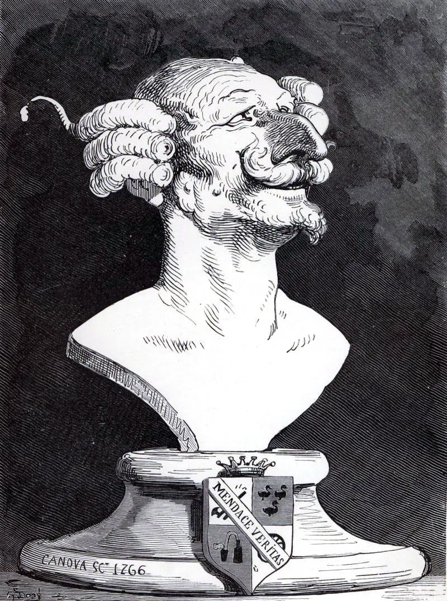

Pulled out by his own hair
In Raspe's tales the baron hauls himself and his horse out of a swamp by his own hair.1 Philosophy kept the image for a problem with no easy floor: ask why a claim holds, then ask again, and you end in one of three places. They hang in this room.
The three horns
-
The circle
The reason leans on the thing it was meant to prove. A model grading its own answer lives here.
-
RECEIPT 1: the answer is rightRECEIPT 2: receipt 1 is rightRECEIPT 3: receipt 2 is rightRECEIPT 4: receipt 3 is right ...
The regress
Every check needs a check. The paper never runs out, and nothing is ever settled.
-
Accepted
The decree
Someone stops the questions by authority. The stamp is real; the reason behind it is not on the page.
Stand on the record
Albert's own answer was to keep every result open to criticism, never to finish the proof.2 That is the floor Flywheel builds on. The check sits outside the model, against a record the model did not write, and anyone can run it again.
It does not escape the trilemma. It makes the stopping point visible and re-runnable, which is the most a check can honestly offer.
Show me
Three answers against one record, and what the checker decided: the Flywheel room.
- 1. Rudolf Erich Raspe, Baron Munchausen's Narrative of his Marvellous Travels and Campaigns in Russia, 1785. The slab behind the title is Gustave Doré's 1862 bust of the baron, public domain. Back to the text
- 2. Hans Albert, Treatise on Critical Reason, 1968, which names the trilemma and argues for critical testing in its place. Back to the text